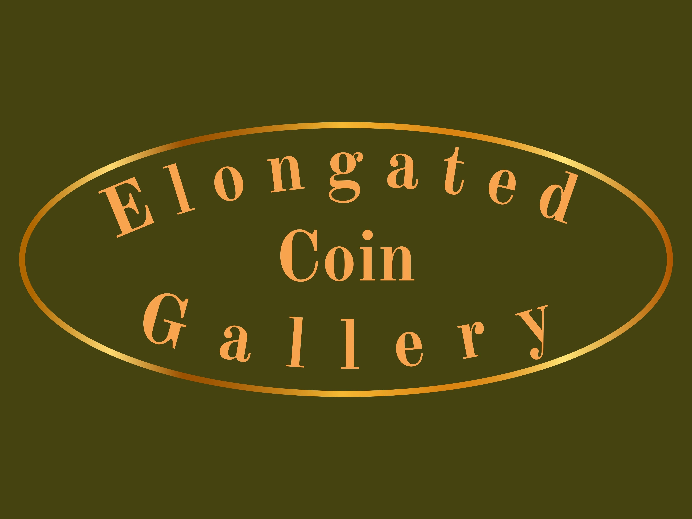
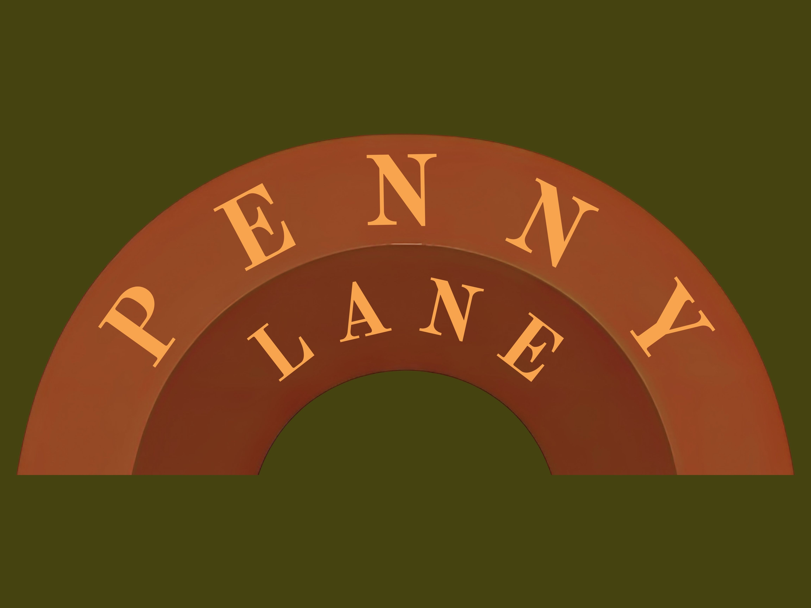

At the MEC, our Elongated Coin Gallery holds all of our Elongated Coins, from our permanent collection and those on loan. The MEC maintains a collections of elongated coins spanning across centuries to explore and interpret what role coin elongation has played in American society and culture since the 1800s. The MEC works to protect the process of coin elongation across the United States, and prioritizes making sustainable and affordable keepsakes accessible to all. To take a closer look, explore the virtual gallery below or come in for a visit!

Penny Lane is our most notable gallery. Featured on KQED, NBC Bay Area, and in the SF Chronicle, Penny Lane plays classics by The Beatles as visitors explore our hall of over 50 pressed penny machines from locations around the country. These machines were donated by penny fans and purchased by the MEC, recovered from penny machine locations that have been closed down around the country. We at the MEC are committed to supporting an increase in penny machine locations, so should these locations reopen, we maintain that they will be returned to their original homes for the public to enjoy. For the time being, we will keep them safe and in use here at the MEC.
Explore our Virtual Penny Gallery and learn more about all the Elongated Coins we have in our permanent collection. Click on each coin to dive deeper into its life!

Rainforest Cafe Pressed Penny - Gorilla, 2017

Fishetarian Pressed Penny - Crab, 2023

Exploratorium Pressed Penny - Cow Eye Dissection, 2026

Pismo Beach Pressed Penny - Otter, 2026

Cal Academy Pressed Penny - Living Roof, 2025

Multnomah Falls, Oregon Coin - Falls, 2026
gift from the Sierra Todd collection
World's Columbian Exchange Coin - 1893
gift from the American Numismatic Association
San Francisco Pressed Penny - Golden Gate Bridge, 2017

Santa Cruz Beach Boardwalk Pressed Penny - Cave Train, 2018

Crater Lake Pressed Penny - 2022

Universal Studios Pressed Penny - Jurassic World, 2025

SF Zoo Pressed Penny - Grizzly, 2024

Imperial War Museum Pressed Penny - Flanders Poppy, 2019

Farmers Market Pressed Penny - 2023

Old Town San Diego Pressed Penny - 2024

Philadelphia Pressed Penny - Liberty Bell, 2024

Cal Academy Pressed Penny - Planets, 2025

Muir Woods Pressed Penny - Owl, 2026
gift of Claire Weeks
4200 Park Blvd
Oakland, CA 94602
Hours
Wednesday-Thursday: 10am to 5pm
Friday-Sunday: 10am to 7pm
Monday-Tuesday: Closed
Contact Us
Email